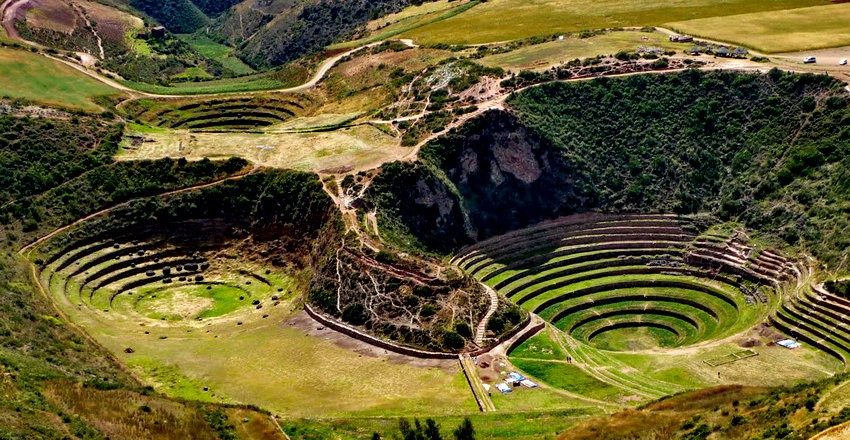

Loạt tàn tích cổ tại Peru - "thiên đường" dành cho những người có đam mê bất tận với lịch sử cổ đại
Dù là tàn tích nhưng loạt địa điểm dưới đây vẫn có sức hút lớn với các tín đồ du lịch, đặc biệt là với những ai luôn tò mò về thế giới cổ đại hàng ngàn năm về trước.Peru là quốc gia Nam Mỹ không chỉ nổi tiếng với con đường mòn Inca hay thánh địa Mecca huyền bí mà còn bởi cảnh đẹp thiên nhiên vô cùng đặc sắc. Nơi đây được mệnh danh là "thiên đường" dành cho những du khách ưa phiêu lưu mạo hiểm và thích khám phá những điều kỳ thú.
Các địa điểm hot nhất ở Peru mà bạn không nên bỏ lỡ đó chính là những tàn tích cổ của người Inca để lại. Dù là tàn tích nhưng chúng vẫn có sức hút lớn với các tín đồ du lịch. Khi đến đây tham quan, bạn nên mặc trang phục thoải mái và đi giày thể thao nhé bởi chắc chắn sẽ phải leo trèo và di chuyển khá nhiều đấy.
1. Moray:
Một trong những tàn tích tuyệt vời nhất của người Inca là ở Moray, đây thực chất là một vùng đất lún xuống nằm trên một cao nguyên có hình dáng của các bậc thềm ruộng bậc thang. Những bậc thang được phân chia theo dạng các cầu thang lồng mở rộng lên phía trên và cho phép mọi người đi bộ từ trên xuống dưới. Giờ mở cửa của Moray là từ 7h sáng đến 6h tối.
Nguồn ảnh: Travel photographs.net
Nguồn ảnh: Patty Reu
2. Machu Picchu:
Machu Picchu là biểu tượng thân thuộc nhất của đế chế Inca. Nằm trên một sườn núi trong thung lũng và được mô tả như một kiệt tác kiến trúc tuyệt vời, Machu Picchu là một bức tường khổng lồ, bao quanh ruộng bậc thang được tưới bằng dòng suối tự nhiên, dốc đá sừng sững được cắt từ núi. Tất cả tạo cho nơi đây vẻ đẹp huyền ảo như một bức tranh nghệ thuật hùng vĩ, bí hiểm, hút hồn bao du khách trên thế giới.

Nguồn ảnh: Internet
Nguồn ảnh: Internet
3. Winay Wayna:
Nằm trên đường mòn Inca, Winay Wayna được xây dựng trong một sườn đồi nhìn ra sông Urubamba, nơi đây được xem như điểm dừng chân cho du khách sau những chặng đường dài trên hành trình đến Machu Picchu. Ghé thăm Winay Wayna là một trải nghiệm tuyệt vời cho những ai muốn khám phá Peru bằng hình thức trekking.

Nguồn ảnh: Internet
Nguồn ảnh: Internet
4. Sacsayhuaman:
Cách quảng trường chính của thành phố Cusco 4 km, Sacsayhuaman là những bức tường được xây dựng từ thời chính phủ Inca trong thế kỷ XV, trên một ngọn đồi được bao quanh bởi những ngọn núi, nơi có cảnh quan đẹp và hệ động thực vật phong phú. Có ba bức tường song song được xây dựng ở độ cao khác nhau bằng đá vôi rất khít nhau và có kích thước rất lớn. Nhiều ý kiến cho rằng các bức tường ngoằn ngoèo đại diện cho hàm răng của con báo.
Nguồn ảnh: Internet

Nguồn ảnh: Internet
5. Pisac:
Nếu bạn đến du lịch ở Peru, đừng quên ghé thăm Pisac nhé! Được xây dựng theo hình chim đa đa với những thửa ruộng bậc thang trải dài xuống, Pisac là một trong những viên ngọc quý thuộc thung lũng linh thiêng của người Inca. Nơi đây có những ngôi đền và cung điện được chạm khắc tinh xảo bằng đá.
Nguồn ảnh: Internet
Nguồn ảnh: Internet
6. Choquequirao:
Nằm trên đường biên giới giữa Cuzco và Apurimac, Choquequirao được xây dựng theo một phong cách hoàn toàn khác so với Machu Picchu. Từ Choquequirao đến Machu Picchu là một cuộc phiêu lưu đầy thách thức. Du khách chỉ có thể đi du lịch đến Choquequirao bằng cách đi bộ hoặc cưỡi ngựa. Nếu di chuyển bằng cách đi xe thì các chuyến đi đến Choquequirao từ Cachora có thể mất đến bốn ngày.
@choquequiraotrek
Nguồn ảnh: Internet
7. Ollantaytambo:
Nằm ở phía Nam Peru, cách thành phố Cusco 72km, Ollantaytambo là một thị trấn khảo cổ nổi tiếng và là địa điểm du lịch nổi tiếng ở Peru. Nằm giữa những thung lũng linh thiêng của người Inca, thị trấn khảo cổ này mang một nét yên bình đến lạ thường. Ollantaytambo là một điểm du lịch quan trọng và là một trong những điểm bắt đầu phổ biến nhất đối với những du khách muốn khám phá đường mòn Inca.
Nguồn ảnh: Internet
Nguồn ảnh: Internet